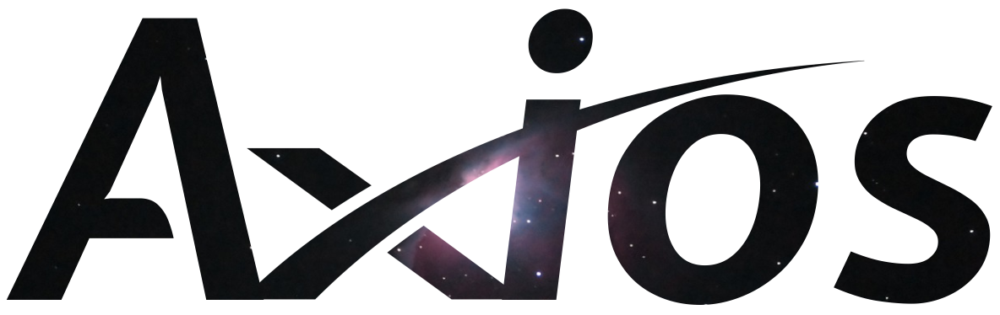

Summer is characterized by an increase in temperatures and rainfall. Sudden changes in the weather can be observed in this season of the year, at this time it is common to have the presence of convective rains (they occur due to the convective movement of hot and cold air) which are fast and intense, usually occurring in the afternoon. , when the evaporation rate is higher.
In the Northern Hemisphere, summer begins with the summer solstice, between the 20th and 21st of June. It ends between the 22nd and 23rd of September. In the Southern Hemisphere, summer begins with the summer solstice, between the 20th and 21st of December. It ends between the 20th and 21st of March.
A partir das mudanças no cenário natural, os índios procuraram definir de forma mais precisa e confiável a passagem do tempo e das estações, para caçar, colher alimentos, celebrar momentos importantes, entre outros. Para isso, várias tribos brasileiras utilizavam o movimento aparente do sol, essa metodologia, além de demonstrar a passagem do tempo, também indica a direção dos pontos cardeais.
Based on changes in the natural scenario, the Indians sought to define more precisely and reliably the passage of time and seasons, in order to hunt, gather food, celebrate important moments, among others. For this, several Brazilian tribes used the apparent movement of the sun, this methodology, in addition to demonstrating the passage of time, also indicates the direction of the cardinal points.
In this way, it is concluded that the observation of natural phenomena constitutes the main form of guidance and control of these peoples, helping them through generations to cultivate, explore and harvest at the most favorable moments of the environment and also demonstrating that knowledge and technology do not must necessarily be related to electronic equipment.
References:
https://science.nasa.gov/historic-brazilian-constellation
http://www.telescopiosnaescola.pro.br/indigenas.pdf
https://brasilescola.uol.com.br/geografia/verao.htm

Liriel Magalhães author